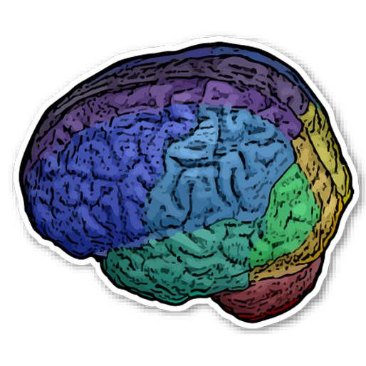
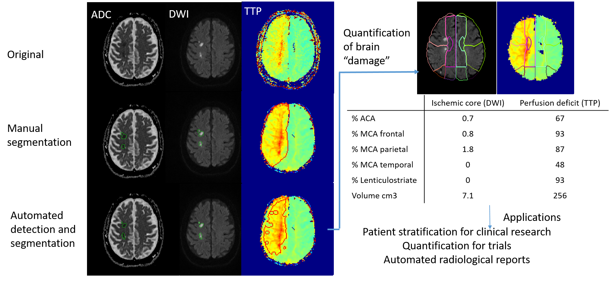
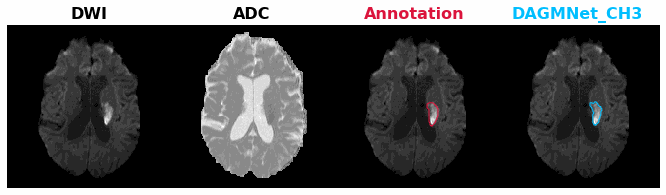
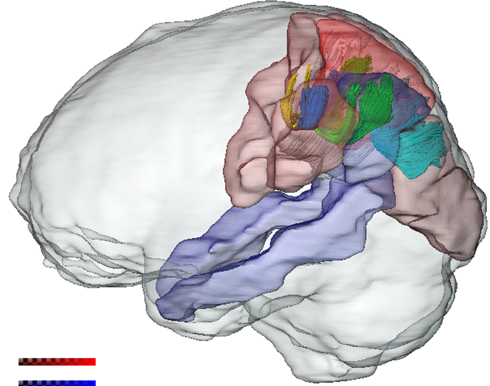
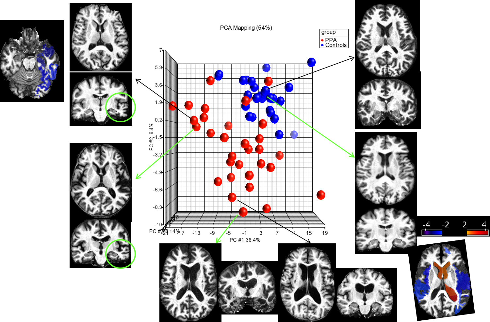
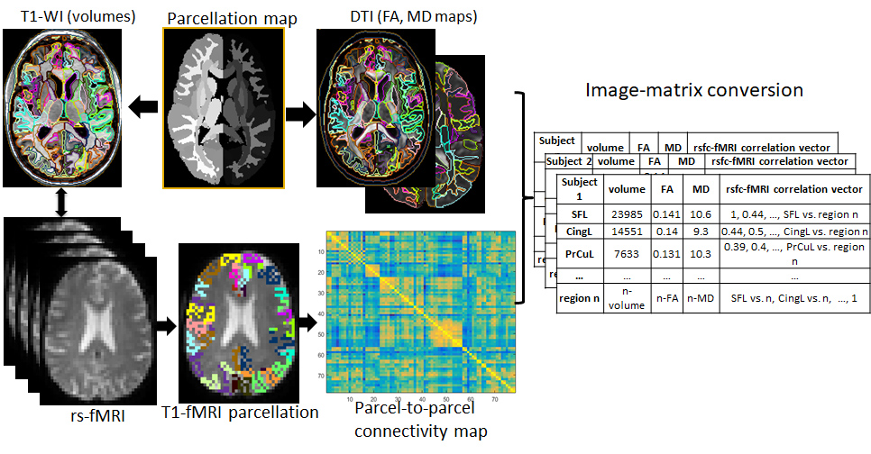
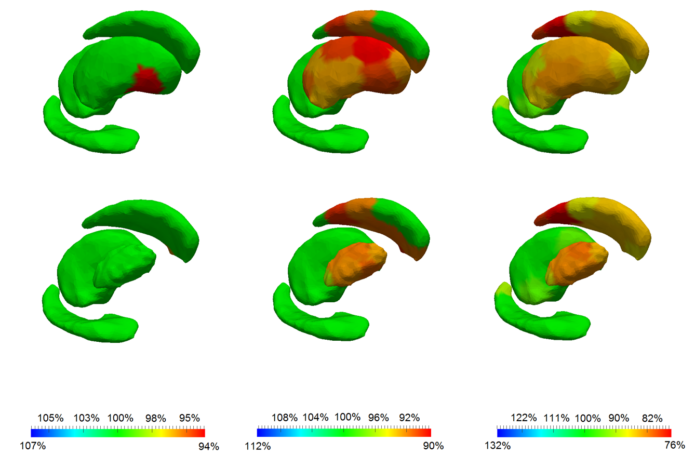
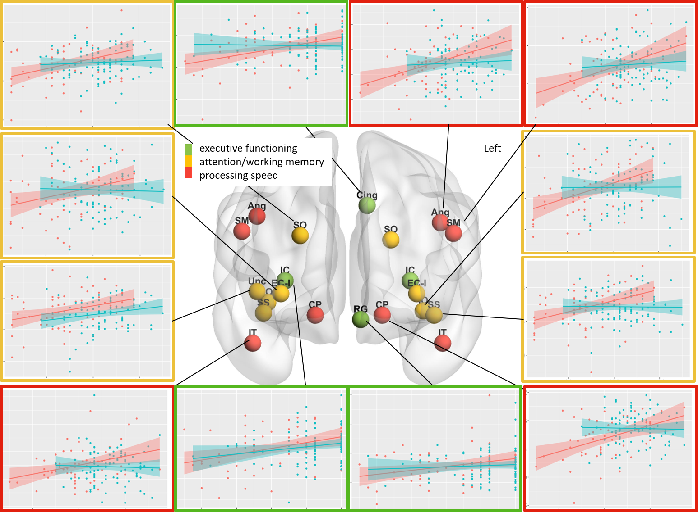
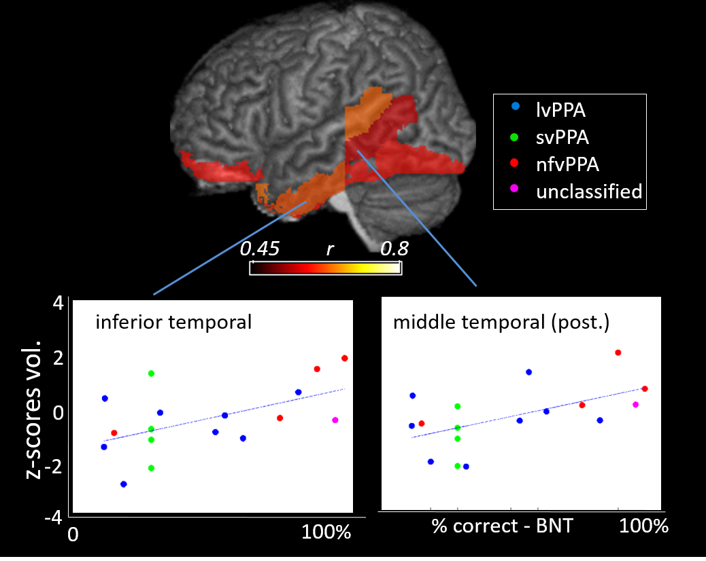

Our lab uses MRI to investigate brain organization and function. We develop and apply methods for processing and analyzing diverse MRI modalities in order to characterize distinctive brain patterns and to study conditions that include neurodegenerative diseases, psychiatric disorders, and stroke. We develop tools for brain MRI segmentation and quantification, promoting the means to perform reliable and reproducible translational research. We are involved with the creation of multiple electronic brain atlases and tools, extensively used by the neuroimaging community. Our work involves BigData and high-throughput analysis, by applying artificial intelligence to retrieve latent features that characterize diverse clinical conditions.
We are involved with the creation of multiple electronic brain atlases, extensively used by the neuroimaging community. In addition to the educational propose, these atlases allow the quantification of multiple contrasts and MRI properties per anatomical structure, facilitating the translation and interpretation of the results. We published the first white matter atlas, which was adopted by major software, such as FSL, 3D Slicer and MRICron. We then created the first digital atlas of deep gray matter structures based on susceptibility weighted images, later extending the effort to multi-atlases. We also created the first digital, 3D, deformable atlas of brain arterial territories based on lesion distributions in more than a thousand stroke lesions, freely downloadable at https://www.nitrc.org/projects/arterialatlas.


Automated detection, segmentation, and quantification of ischemic abnormality and perfusion deficit in acute stroke MRIs, at total and per vascular territory.
Acute-stroke Detection Segmentation (ADS)
In collaboration with clinical scientists, we study relationships between brain damage and functional deficits, particularly in stroke. These studies made clear the need of a large, well-curated database and of automated technologies for reproducible, large scale data processing. We create free and accessible tools to quantify the ischemic stroke core and perfusion deficits, using a large sample (3,000) of clinical images of patients with acute strokes. Our tools are suited to imaging experts and non-experts working on translational research, as they have minimal computational requirements, work in local CPUs with a single command line. They output lesion volume, 3D digital segmentation, and quantification of damage per brain structure and per vascular territory, in real time.



Integrative analysis of functional and structural connectivity
Stratification of populations, individual characterization and image-based retrieval
Integration of multiple image domains for structure-based analysis
Abnormal patterns and brain pathologies often involve subtle and heterogeneous changes in multiple domains. To access this multimodal information, in collaboration with Dr. Susumu Mori and Dr. Michael Miller, we develop and test technologies for automated, public, and accessible atlas-based analysis of structural images, diffusion-weighted images, resting state fMRI, susceptibility weighted images, and arterial spin labeling.
In combination with these technologies, we have been applying artificial intelligence and high-throughput information to characterize diseases and individual brain patterns, for content-based image retrieval, to study the pathological basis of clinical conditions, and for patient stratification.



Progression of ganglia atrophy in Huntington's Disease, detected by shape analysis
Association between white matter structure and cognition in psychosis
Brain atrophy relates to language deficits in Primary Progressive Aphasia
The quantification of morphometry and photometry in brain MRIs and of their deviations from the healthy pattern, enabled us to characterize diverse aspects of normal and abnormal brain development, disease models, to access relationships between anatomy and function, and to trace longitudinal progression of diseases..
In collaboration with clinical scientists, we helped to identify potential biomarkers for clinical modeling and therapeutics.
Associate Professor of Radiology
Johns Hopkins University, School of Medicine
217 B Traylor Building
720 Rutland Ave
Baltimore, MD, 21205
Phone: (410) 955-4215
Email: afaria1@jhmi.edu